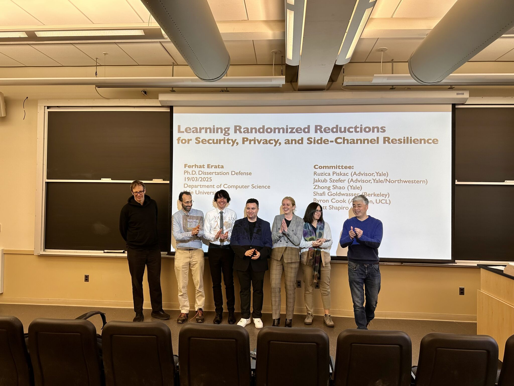

March 19, 2025 · Milestone
Defended my PhD at Yale
Learning Randomized Reductions for Security, Privacy, and Side-Channel Resilience — Ph.D. Dissertation Defense, Department of Computer Science, Yale University.

I'm thrilled to have defended my PhD in Computer Science at Yale. I want to express my deepest gratitude to my advisors, Professors Ruzica Piskac and Jakub Szefer, for steering my research and mentoring me at every step.
I also extend my gratitude to my thesis committee — Zhong Shao, Shafi Goldwasser (Turing Award, 2012), Byron Cook (VP, AWS), and Scott J. Shapiro — for their invaluable feedback and support.